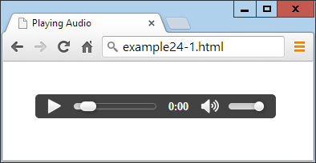
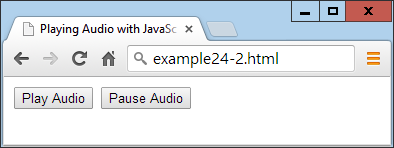
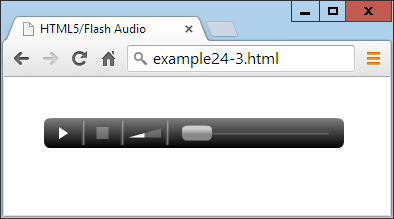
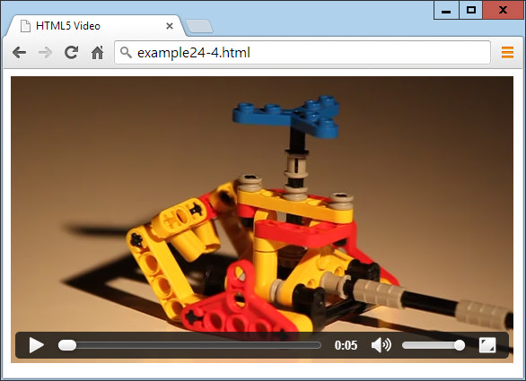
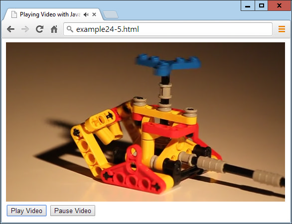
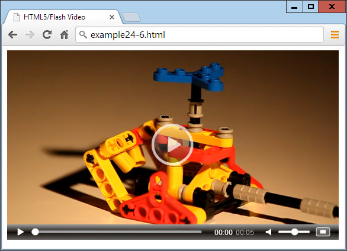

HTML5 Audio and Video
One of the biggest driving forces behind the growth of the Internet has been the insa‐
tiable demand from users for ever more multimedia in the form of audio and video.
Initially, bandwidth was so precious that there was no such thing as live streaming,
and it could take minutes or even hours to download an audio track, let alone a video.
The high cost of bandwidth and limited availability of fast modems drove the devel‐
opment of faster and more efficient compression algorithms, such as MP3 audio and
MPEG video, but even then the only way to download files in any reasonable length
of time was to drastically reduce their quality.
One of my earlier Internet projects, back in 1997, was the UK’s first online radio sta‐
tion licensed by the music authorities. Actually, it was more of a podcast (before the
term was coined) because we made a daily half-hour show and then compressed it
down to 8-bit, 11KHz mono using an algorithm originally developed for telephony,
and it sounded like phone quality, or worse. Still, we quickly gained thousands of lis‐
teners who would download the show and then listen to it as they surfed to the sites
discussed in it by means of a pop-up browser window containing a plug-in.
Thankfully for us, and everyone publishing multimedia, it soon became possible to
offer greater audio and video quality, but still only by asking the user to download
and install a plug-in player. Flash became the most popular of these players, after
beating rivals such as RealAudio, but it gained a bad reputation as the cause of many a
browser crash, and constantly required upgrading when new versions were released.
So it was generally agreed that the way ahead was to come up with some web stand‐
ards for supporting multimedia directly within the browser. Of course, browser
developers such as Microsoft and Google had differing visions of what these stand‐
ards should look like, but after the dust had settled, they had agreed on a subset of file
types that all browsers should play natively, and these were introduced into the
HTML5 specification.
Finally, it is possible (as long as you encode your audio and video in a few different
formats) to upload multimedia to a web server, place a couple of HTML tags in a web
page, and have the media play on any major desktop browser, smartphone, or tablet
device, without the user having to download a plug-in or make any other changes.
There are still a lot of older browsers out there, so Flash remains
important for supporting them. In this chapter, I show you how to
add code to use Flash as a backup to HTML5 audio and video, to
cover as many hardware and software combinations as possible.
About Codecs
The term
codec
stands for en
co
der/
dec
oder. It describes the functionality provided by
software that encodes and decodes media such as audio and video. In HTML5 there
are a number of different sets of codecs available, depending on the browser used.
Following are the codecs supported by the HTML5
<audio>
tag (and also when audio
is attached to HTML5 video):
AAC
This audio codec, which stands for Advanced Audio Encoding, is used by Apple’s
iTunes store, and is a proprietary patented technology supported by Apple, Google,
and Microsoft. It generally uses the
.aac
file extension. Its mime type is
audio/aac.
MP3
This audio codec, which stands for MPEG Audio Layer 3, has been available for
many years. While the term is often (incorrectly) used to refer to any type of digital
audio, it is a proprietary patented technology that is supported by Apple, Google,
Mozilla Firefox, and Microsoft. The file extension it uses is
.mp3
. Its mime type is
audio/mpeg.
PCM
This audio codec, which stands for Pulse Coded Modulation, stores the full data as
encoded by an analog-to-digital converter, and is the format used for storing data on
audio CDs. Because it does not use compression, it is called a
lossless
codec and its
files are generally many times larger than AAC or MP3 files. It is supported by Apple,
Mozilla Firefox, and Opera. Usually this type of file has the extension
.wav
. Its mime
type is
audio/wav
, but you may also see
audio/wave.
Vorbis
Sometimes referred to as Ogg Vorbis—because it generally uses the
.ogg
file extension
—
this audio codec is unencumbered by patents and free of royalty payments. It is
supported by Google Chrome, Mozilla Firefox, and Opera. Its mime type is
audio/
ogg
, or sometimes
audio/oga.
The following list summarizes the major operating systems and browsers, along with
the audio types their latest versions support:
•
Apple iOS
: AAC, MP3, PCM
•
Apple Safari
: AAC, MP3, PCM
•
Google Android
: 2.3+ AAC, MP3, Vorbis
•
Google Chrome
: AAC, MP3, Vorbis
•
Microsoft Internet Explorer
: AAC, MP3
•
Mozilla Firefox
: MP3, PCM, Vorbis
•
Opera
: PCM, Vorbis
The outcome of these different levels of codec support is that you always need at least
two versions of each audio file to ensure it will play on all platforms. One of these
should be Vorbis to support Opera, but for the second you have a choice of either
AAC or MP3.
The <audio> Element
To cater to all platforms, you need to record or convert your content using multiple
codecs and then list them all within
<audio>
and
</audio>
tags, as in
Example 24-1
.
The nested
<source>
tags then contain the various media you wish to offer to a
browser. Because the
controls
attribute is supplied, the result looks like
Figure 24-1
.
Example 24-1. Embedding three
different types of audio files
<audio controls>
<source src='audio.m4a' type='audio/aac'>
<source src='audio.mp3' type='audio/mp3'>
<source src='audio.ogg' type='audio/ogg'>
</audio>

Figure 24-1. Playing an audio file
In this example I included three different audio types, because that’s perfectly accepta‐
ble, and can be a good idea if you wish to ensure that each browser can locate its pre‐
ferred format rather than just one it knows how to handle. However, the example will
still play on all platforms if one or the other (but not both) of the MP3 or the AAC
files is dropped.
The
<audio>
element and its partner
<source>
tag support several attributes:
autoplay
Causes the audio to start playing as soon as it is ready
controls
Causes the control panel to be displayed
loop
Sets the audio to play over and over
preload
Causes the audio to begin loading even before the user selects Play
src
Specifies the source location of an audio file
type
Specifies the codec used in creating the audio
If you don’t supply the
controls
attribute to the
<audio>
tag, and don’t use the
auto
play
attribute either, the sound will not play and there won’t be a Play button for the
user to click to start playback. This would leave you no option other than to offer this
functionality in JavaScript, as in
Example 24-2
(with the additional code required
highlighted in bold), which provides the ability to play and pause the audio, as shown
in
Figure 24-2
.
Example 24-2. Playing audio using JavaScript
<!DOCTYPE html>
<html>
<head>
<title>Playing Audio with JavaScript</title>
<script src='OSC.js'></script>
</head>
<body>
<audio
id='myaudio'
>
<source src='audio.m4a' type='audio/aac'>
<source src='audio.mp3' type='audio/mp3'>
<source src='audio.ogg' type='audio/ogg'>
</audio>
<button onclick='playaudio()'>Play Audio</button>
<button onclick='pauseaudio()'>Pause Audio</button>
<script>
function playaudio()
{
O('myaudio').play()
}
function pauseaudio()
{
O('myaudio').pause()
}
</script>
</body>
</html>

Figure 24-2. HTML5 audio can be controlled with JavaScript
This works by calling the
play
or
pause
methods of the
myaudio
element when the
buttons are clicked.
Supporting Non-HTML5 Browsers
It will probably be necessary to support older browsers for the foreseeable future by
providing a fallback to Flash.
Example 24-3
shows how you can do this using a Flash
plug-in saved as
audioplayer.swf
(available, along with all the examples, in the free
download at the
http://lpmj.net
companion website). The code to add is highlighted
in bold.
Example 24-3. Providing a Flash fallback for non-HTML5 browsers
<audio controls>
<object type="application/x-shockwave-flash"
data="audioplayer.swf" width="300" height="30">
<param name="FlashVars"
value="mp3=audio.mp3&showstop=1&showvolume=1">
</object>
<source src='audio.m4a' type='audio/aac'>
<source src='audio.mp3' type='audio/mp3'>
<source src='audio.ogg' type='audio/ogg'>
</audio>
Here we take advantage of the fact that on non-HTML5 browsers, anything inside the
<audio>
tag (other than the
<source>
elements, which are ignored) will be acted on
by the browser. Therefore, by placing an
<object>
element there that calls up a Flash
player, we ensure that any non-HTML5 browsers will at least have a chance of playing
the audio, as long as they have Flash installed, as shown in
Figure 24-3
.

Figure 24-3. The Flash audio player has been loaded
The particular audio player used in this example,
audioplayer.swf
, takes the following
arguments and values to the
FlashVars
attribute of the
<param>
element:
mp3
The URL of an MP3 audio file.
showstop
If 1, shows the Stop button; otherwise, it is not displayed.
showvolume
If 1, shows the volume bar; otherwise, it is not displayed.
As with many elements, you can easily resize the object to (for example) 300×30 pix‐
els by providing these values to its
width
and
height
attributes.
The <video> Element
Playing video in HTML5 is quite similar to audio; you just use the
<video>
tag and
provide
<source>
elements for the media you are offering.
Example 24-4
shows how
you do this with three different video codec types, as displayed in
Figure 24-4
.
Example 24-4. Playing HTML5 video
<video width='560' height='320' controls>
<source src='movie.mp4' type='video/mp4'>
<source src='movie.webm' type='video/webm'>
<source src='movie.ogv' type='video/ogg'>
</video>

Figure 24-4. Playing HTML5 video
The Video Codecs
As with audio, there are a number of video codecs available, with differing support
across multiple browsers. These codecs come in different containers, as follows:
MP4
A license-encumbered, multimedia container format standard specified as a part of
MPEG-4, supported by Apple, Microsoft, and, to a lesser extent Google, since it has its own WebM container format. Its mime type is video/mp4.
OGG
A free, open container format maintained by the Xiph.Org Foundation. The creators
of the OGG format state that it is unrestricted by software patents and is designed to
provide for efficient streaming and manipulation of high-quality digital multimedia.
Its mime type is video/ogg , or sometimes video/ogv.
WebM
An audio-video format designed to provide a royalty-free, open video compression
format for use with HTML5 video. The project’s development is sponsored by Google. There are two versions: VP8 and the newer VP9. Its mime type is video/webm.
These may then contain one of the following video codecs:
H.264
A patented, proprietary video codec for which playback is free for the end user, but
which may incur royalty fees for all parts of the encoding and transmission process.
At the time of writing, all of Apple, Google, Mozilla Firefox, and Microsoft Internet
Explorer support this codec, while Opera (the remaining major browser) doesn’t.
Theora
This is a video codec unencumbered by patents, and free of royalty payments at all
levels of encoding, transmission, and playback. This codec is supported by Google Chrome, Mozilla Firefox, and Opera.
VP8
This video codec is similar to Theora but is owned by Google, which has published it
as open source, making it royalty free. It is supported by Google Chrome, Mozilla Firefox, and Opera.
VP9
As VP8 but more powerful, using half the bitrate.
The following list details the major operating systems and browsers, along with the
video types their latest versions support:
•
Apple iOS
: MP4/H.264
•
Apple Safari
: MP4/H.264
•
Google Android
: MP4, OGG, WebM/H.264, Theora, VP8
•
Google Chrome
: MP4, OGG, WebM/H.264, Theora, VP8, VP9
•
Internet Explorer
: MP4/H.264
•
Mozilla Firefox
: MP4, OGG, WebM/H.264, Theora, VP8, VP9
•
Opera
: OGG, WebM/Theora, VP8
Looking at this list, it’s clear that MP4/H.264 is almost unanimously supported,
except for the Opera browser. So if you’re prepared to ignore the 1 percent or so of
users this comprises (and hope that Opera will soon have to adopt the format any‐
way), you need to supply your video using only one file type: MP4/H.264. But for
maximum viewing, you really ought to encode in OGG/Theora or OGG/VP8 as well
(but not VP9, as it’s not yet been adopted by Opera).
Therefore, the
movie.webm
file in
Example 24-4
isn’t strictly needed, but shows how
you can add all the different file types you like, to give browsers the opportunity to
play back the formats they prefer.
The
<video>
element
and
accompanying
<source>
tag
support
the
following
attributes:
autoplay
Causes the video to start playing as soon as it is ready
controls
Causes the control panel to be displayed
height
Specifies the height at which to display the video
loop
Sets the video to play over and over
muted
Mutes the audio output
poster
Lets you choose an image to display where the video will play
preload
Causes the video to begin loading before the user selects Play
src
Specifies the source location of a video file
type
Specifies the codec used in creating the video
width
Specifies the width at which to display the video
If you wish to control video playback from JavaScript, you can do so using code such
as that in
Example 24-5
(with the additional code required highlighted in bold), and
shown in
Figure 24-5
.
Example 24-5. Controlling video playback from JavaScript
<!DOCTYPE html>
<html>
<head>
<title>Playing Video with JavaScript</title>
<script src='OSC.js'></script>
</head>
<body>
<video
id='myvideo'
width='560' height='320'>
<source src='movie.mp4' type='video/mp4'>
<source src='movie.webm' type='video/webm'>
<source src='movie.ogv' type='video/ogg'>
</video><br>
<button onclick='playvideo()'>Play Video</button>
<button onclick='pausevideo()'>Pause Video</button>
<script>
function playvideo()
{
O('myvideo').play()
}
function pausevideo()
{
O('myvideo').pause()
}
</script>
</body>
</html>

Figure 24-5. JavaScript is being used to control the video
This code is just like controlling audio from JavaScript. Simply call the
play
and/or
pause
methods of the
myvideo
object to play and pause the video.
Supporting Older Browsers
Also as with audio, older versions of browsers will still be in general use for a while to
come, so it makes sense to offer a Flash video fallback to people with non-HTML5
browsers.
Example 24-6
shows you how to do this (highlighted in bold) using the
flowplayer.swf
file (available in the free download at
http://lpmj.net
), and
Figure 24-6
shows how it displays in a browser that doesn’t support HTML5 video.
Example 24-6. Providing Flash as a fallback video player
<video width='560' height='320' controls>
<object width='560' height='320'
type='application/x-shockwave-flash'
data='flowplayer.swf'>
<param name='movie' value='flowplayer.swf'>
<param name='flashvars'
value='config={"clip": {"url": "http://tinyurl.com/html5video-mp4", "autoPlay":false, "autoBuffering":true}}'>
</object>
<source src='movie.mp4' type='video/mp4'>
<source src='movie.webm' type='video/webm'>
<source src='movie.ogv' type='video/ogg'>
</video>

Figure 24-6. Flash provides a handy fallback for non-HTML5 browsers
This Flash video player is particular about security, so it won’t play videos from a local
file system, only from a web server, so I have supplied a file on the Web (at
tinyurl.com/html5video-mp4
) for this example to play.
Here are the argument s to supply to the
flashvars
attribute of the
<param>
element:
url
A URL on a web server of a .mp4 file to play.
autoPlay
If true, plays automatically; otherwise, waits for the Play button to be clicked.
autoBuffering
If true, in order to minimize buffering later on with slow connections, before it starts
playing, the video will be preloaded sufficiently for the available bandwidth.
For more information on the Flash
flowplayer
program (and an
HTML5 version), check out
http://flowplayer.org
.